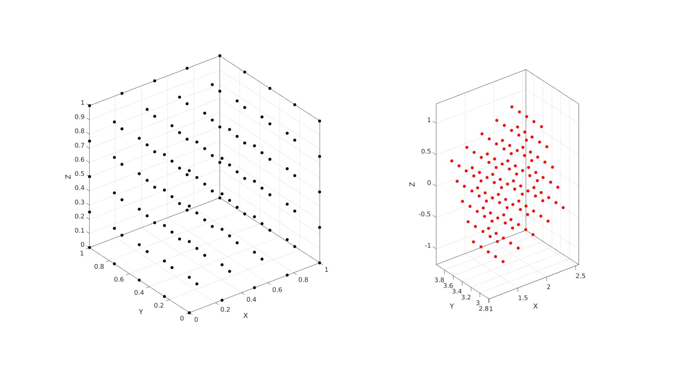

disp2strain
Below is a demonstration of the features of the disp2strain function
Contents
clear; close all; clc;
Syntax
[D_out]=disp2strain(Ux, Uy, Uz, v, strain_type);
Description
Computes deformation metrics (including strains) for the meshgrid formatted displacement arrays Ux, Uy, and Uz, based on the point spacing v and strain_type requested.
Examples
n=5; %Number of points defined in range r=linspace(0,1,n); %The range used here v=mean(diff(r))*ones(1,3); %The "voxel" or step size [X1,Y1,Z1]=meshgrid(r); %Meshgrid formatted coordinate set testCase=1; switch testCase case 1 % This uses a specified left stretch tensor % Stretches (non-ordered) l1=1.1; l2=0.7; l3=1.5; %Build left stretch tensor V=[l1 0 0;... 0 l2 0;... 0 0 l3]; %Define rotation R=euler2DCM([0.25*pi 0.25*pi 0]); %Create deformation gradient tensor F=V*R; U=R'*F; %Right stretch tensor %Define translation t=[1 pi -0.5]; case 2 % This uses a specified right stretch tensor %Stretches (non-ordered) l1=1.1; l2=0.7; l3=1.5; %Build right stretch tensor U=[l1 0 0;... 0 l2 0;... 0 0 l3]; %Define rotation R=euler2DCM([0.25*pi 0.25*pi 0]); %Create deformation gradient tensor F=R*U; V=F*R';% Left stretch tensor %Define translation t=[1 pi -0.5]; end %Define initial coordinate vector V1=[X1(:) Y1(:) Z1(:)]; %Create deformed coordinate vector V2=(F*V1')'; %Rotate/stretch using deformation gradient tensor V2=V2+t(ones(size(V2,1),1),:); %Apply translation % X2=reshape(V2(:,1),size(X1)); Y2=reshape(V2(:,2),size(X1)); Z2=reshape(V2(:,3),size(X1)); %Compute displacements Uxyz=V2-V1; Ux=X2-X1; Uy=Y2-Y1; Uz=Z2-Z1;
Compute deformation data from displacements
% 1 = Biot (linear) strain tensor % 2 = Hencky (logarithmic/natural) strain tensor % 3 = Green-Lagrange strain tensor strain_type=1; [outputStructure]=disp2strain(Ux, Uy, Uz, v, strain_type); %Check output against input F F_check=outputStructure.F{1} R R_check=outputStructure.R{1} U U_check=outputStructure.U{1} V V_check=outputStructure.V{1}
F =
0.7778 0 0.7778
0.3500 0.4950 -0.3500
-0.7500 1.0607 0.7500
F_check =
0.7778 0 0.7778
0.3500 0.4950 -0.3500
-0.7500 1.0607 0.7500
R =
0.7071 0 0.7071
0.5000 0.7071 -0.5000
-0.5000 0.7071 0.5000
R_check =
0.7071 0.0000 0.7071
0.5000 0.7071 -0.5000
-0.5000 0.7071 0.5000
U =
1.1000 -0.2828 0
-0.2828 1.1000 0.2828
0 0.2828 1.1000
U_check =
1.1000 -0.2828 0.0000
-0.2828 1.1000 0.2828
0.0000 0.2828 1.1000
V =
1.1000 0 0
0 0.7000 0
0 0 1.5000
V_check =
1.1000 0.0000 0.0000
0.0000 0.7000 0.0000
0.0000 0.0000 1.5000
cFigure; subplot(1,2,1); hold on; plot3(X1(:),Y1(:),Z1(:),'k.','MarkerSize',25); axisGeom; subplot(1,2,2); hold on; plot3(X2(:),Y2(:),Z2(:),'r.','MarkerSize',25); axisGeom; gdrawnow;

GIBBON www.gibboncode.org
Kevin Mattheus Moerman, gibbon.toolbox@gmail.com
GIBBON footer text
License: https://github.com/gibbonCode/GIBBON/blob/master/LICENSE
GIBBON: The Geometry and Image-based Bioengineering add-On. A toolbox for image segmentation, image-based modeling, meshing, and finite element analysis.
Copyright (C) 2006-2023 Kevin Mattheus Moerman and the GIBBON contributors
This program is free software: you can redistribute it and/or modify it under the terms of the GNU General Public License as published by the Free Software Foundation, either version 3 of the License, or (at your option) any later version.
This program is distributed in the hope that it will be useful, but WITHOUT ANY WARRANTY; without even the implied warranty of MERCHANTABILITY or FITNESS FOR A PARTICULAR PURPOSE. See the GNU General Public License for more details.
You should have received a copy of the GNU General Public License along with this program. If not, see http://www.gnu.org/licenses/.